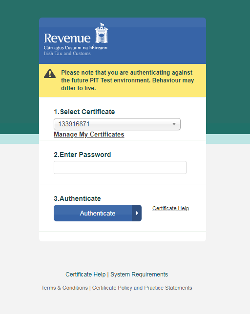
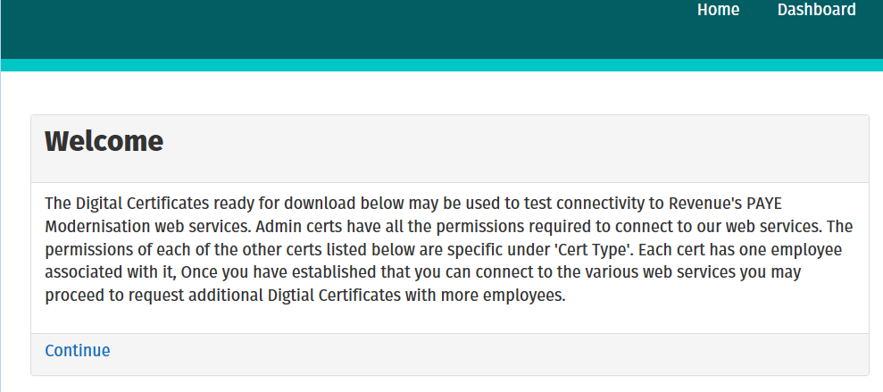
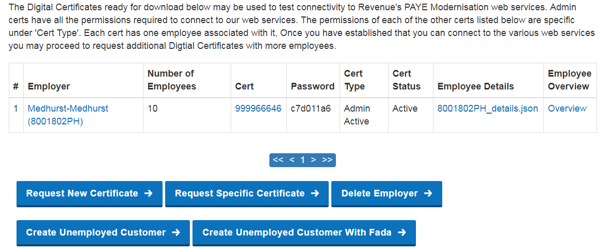
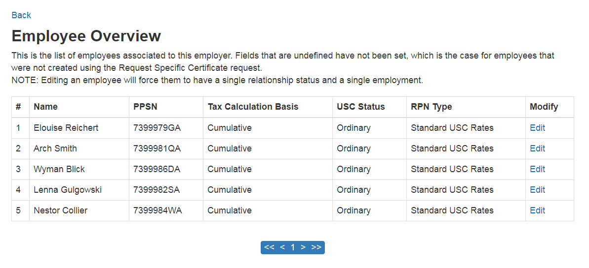
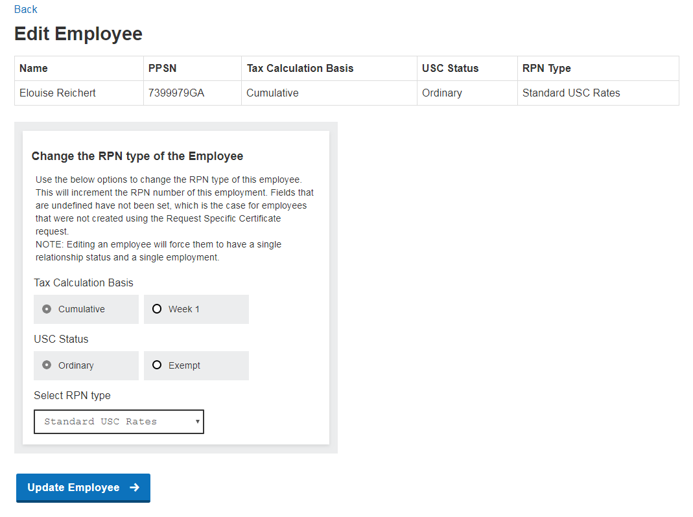
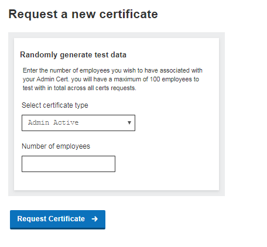
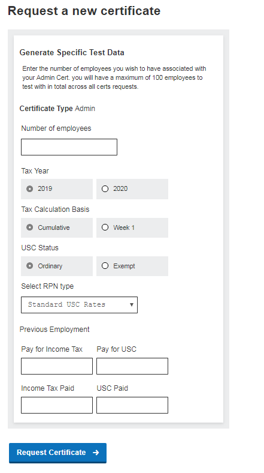
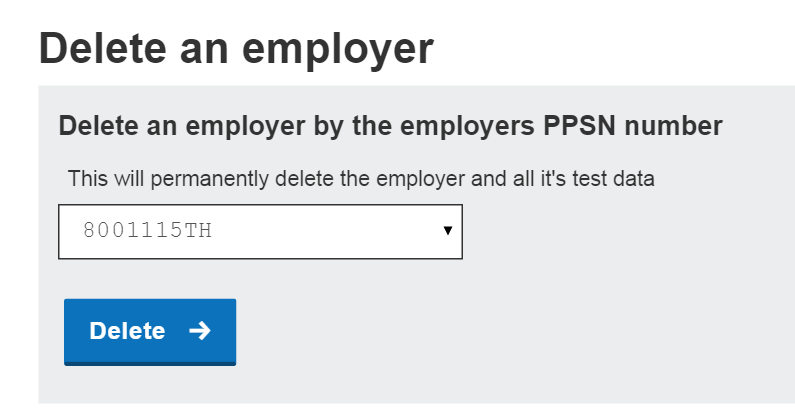
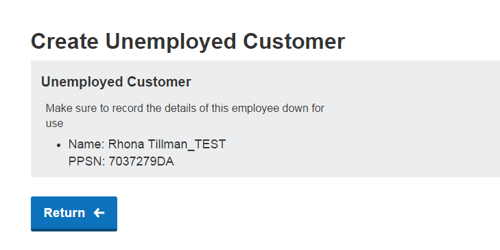

This document is aimed at payroll software developers and testers who are updating their software packages to be compatible with PAYE reporting obligations from 2019 onwards.
The purpose of this document is to serve as a guide to use the PIT Self Service Application. This application provides developers and testers access to exclusive Revenue generated test data that is supported in the PIT environment.
By using this application developers/testers can:
- Download digital certificates associated with test employers required for conformance testing
- Download JSON files containing data of the test employees associated with each test employer
- Request additional certificates for testing
- Delete test employer data
- Create a test unemployed customer
- Download test agent certificates with a test employer
Each employer subsequently created in each environment exists only in that environment. Employers in the PIT current version environment will have a registration number of 8XXXXXXXH and the cert associated with them will be of the form 9999XXXXX. In the PIT next version environment, employers will have a registration number of 9XXXXXXXH and the cert associated with them will be of the form 8888XXXXX.
The PIT Self Service Application can be accessed at the following URL:
https://softwaretest.ros.ie/paye-employers-self-service/intro
In order to access and use the PIT Self Service Application, you need to have completed the registration process for the PAYE Modernisation PIT Help Desk and indicated that you require access to PAYE Modernisation testing. On completion of the registration process, you will receive a digital certificate and password which will allow access to the PIT self service application.
The login screen requires users to sign in with their Test Data Management (TDM) digital certificate and
password provided during the registration process1.
In order to make the digital certificate that was issued as part of the PIT registration process available in the
‘Select Certificate’ drop down menu, it needs to be loaded into the web browser. The ‘Manage My Certificates’
link provides a screen that allows users to select the certificate and load it into the web browser.

Figure 1 Login Screen Layout for PIT Current Version
Please note that this login screen is shared with the ROS Payroll reporting screens. User’s will be directed to the PIT Self Service application from this login screen if they use the Test Data Management (TDM) digital certificate/password provided as part of PIT registration. However, if they use digital certificates provided by the PIT Self Service application they will be directed to the ROS Payroll Reporting screens.

Figure 2 Login Screen Layout for PIT Next Version
From the Login screen, a user can use the ‘Select Certificate’ drop down menu to choose the certificate to use. Once the appropriate certificate is selected and password is entered, clicking the ‘Authenticate’ button completes the sign in. On successful sign in the application takes the user to the Introduction screen of the PIT Self Service application. This screen contains information about the PIT Self Service Application and the PIT testing process.

Figure 3 Screen Layout of the Introduction Screen
The Dashboard page as seen in Figure 4, displays a table of digital certificates and each row contains:
The screen also allows users to:

Figure 4 Screen Layout of the Dashboard
The Employee overview page is accessed by clicking either the employer’s name link or the ‘overview’ link on the dashboard. This page shows users an overview of all employees associated with this employer, as seen in Figure 5. By clicking ‘Edit’ in the Modify column of this page, the user can modify the RPN of this specific employee. Any field that is populated with ‘undefined’ has not had that value set yet, which is the case for any employer created using the ‘Request Certificate’ button.

Figure 5 Employee Overview screen
This page will display the name, PPSN, Tax Calculation Basis, USC Status and RPN Type for the selected employee. From here, users can also change the RPN Profile of the selected employee by selecting tax calculation basis, USC Status and the desired RPN type from the drop down to simulate transitions in the employee’s circumstances. This will increment the RPN number of this employment. It will also automatically make the employee to have a single relationship status and a single employment status as these RPN types only count for such employees.

Figure 4.1 Screen Layout of the Edit Employee
Users can request a new certificate by clicking the ‘Request New Certificates’ or ‘Request Specific Certificates’ buttons available on the Dashboard.
The user can create a new certificate by clicking on the ‘Request a new certificate’ button available on the Dashboard. The user is brought to a new screen where they can select certificate type and the number of employees required. The new certificate will be created for a new Employer. This certificate and the employee data will be available on the Dashboard.

Figure 5 .1 Screen Layout of the Create Custom Certificate
The user can create an employer with employees that have a specific RPN type by clicking on the ‘Request Specific Certificate’ button available on the Dashboard. The user is brought to a new screen where they can select the number of employees required, the tax calculation basis, USC status, RPN type and previous employment tax details if they need. If previous pay and tax details are not entered, the values will default to 0. Upon clicking the ‘Request Certificate’ button, the new certificate will be created for a new Employer. This certificate and the employee data will be available on the Dashboard.

Figure 5.2 Screen Layout of Request Specific Certificate
The user can delete test data by clicking on the ‘Delete Employer’ button available on the Dashboard. The user is brought to a new screen where they can select an Employer Tax Registration Number from the drop-down list and delete all data related to that Employer. The list of Employer Tax Registration Numbers corresponds to the available Employer Tax Registration Numbers on the Dashboard.

Figure 6 Screen Layout of the Delete Employer Screen
Users can create test employees who have yet to be associated with any test employment by clicking on the ‘Create Unemployed Customer’ button available on the Dashboard. The user is brought to a new screen where they can view the result2 of their request to create a new employee not linked to an employment. Unemployed customers can be used as part of testing the New RPN process.

Figure 7 Screen Layout of the Create Unemployed Customer Screen
Customers who will have a fada in their name can also be created using the self-service application. The process for adding an employment for this new customer is described in the next section.
Once you have created an unemployed customer and recorded their details. Create New RPN request should be sent with the details of the unemployed customer to have them added as an employee under an employer. A Create New RPN request should be submitted before trying to Lookup RPN for that customer. The endpoint to send the request to can be found below in the appendix section.
It is recommended that the returned test employee details are noted by the user as clicking the ‘Create Unemployed Customer’ button again will result in a new test employee being displayed here.
Users can request a new Agent certificate by clicking the ‘Request New Certificates’ button available on the Dashboard. They can specify the Agent certificate type and the number of employees required. The new Agent certificate will be created along with a new Employer. This certificate and the employee data will be available on the Dashboard.

Figure 8 Screen Layout of the Create Custom Agent Certificate
This appendix provides the set of REST and SOAP web service endpoints for the Payroll and RPN services available for testing in the Public Interface Testing environment.
https://softwaretest.ros.ie/paye-employers/v1/rest/rpn/{employerRegistrationNumber}/{taxYear}?softwareUsed={SoftwareName}&softwareVersion={softwareVersion}
Example:
https://softwaretest.ros.ie/paye-employers/v1/rest/rpn/00001013N/2018?softwareUsed=abc&softwareVersion=1.0
9.1.1.2
https://softwaretest.ros.ie/paye-employers/v1/rest/rpn/{employerRegistrationNumber}/{taxYear}?softwareUsed={SoftwareName}&softwareVersion={softwareVersion}
Example:
https://softwaretest.ros.ie/paye-employers/v1/rest/rpn/03390656OH/2018?softwareUsed=1&softwareVersion=1.0
https://softwaretest.ros.ie/paye-employers/v1/rest/rpn/{employerRegistrationNumber}/{taxYear}/{employeeId}?softwareUsed={SoftwareName}&softwareVersion={softwareVersion}
Example:
https://softwaretest.ros.ie/paye-employers/v1/rest/rpn/03390656OH/2018/01092485G-2?softwareUsed=1&softwareVersion=1.0
https://softwaretest.ros.ie/paye-employers/v1/rest/rpn/{employerRegistrationNumber}/{taxYear}?softwareUsed={SoftwareName}&softwareVersion={softwareVersion}&employeeIDs={employeeId1},{employeeId2}&dateLastUpdated={date}
Example:
https://softwaretest.ros.ie/paye-employers/v1/rest/rpn/03390656OH/2018?softwareUsed=1&softwareVersion=1&employeeIDs=00202020PA-1,7002439CA-2&dateLastUpdated=2018-02-01
https://softwaretest.ros.ie/paye-employers/v1/rest/payroll/{employerRegistrationNumber}/{taxYear}/{payrollRunReference}/{SubmissionID}?softwareUsed={softwareName}&softwareVersion={softwareVersion}
Example:
https://softwaretest.ros.ie/paye-employers/v1/rest/payroll/00087900D/2018/PayrollRun1/Submission01?softwareUsed=abc&softwareVersion=1.0
https://softwaretest.ros.ie/paye-employers/v1/rest/payroll/{employerRegistrationNumber}/{taxYear}/{PayrollRunReference}/{SubmissionID}?softwareUsed={softwareName}&softwareVersion={softwareVersion}
Example:
https://softwaretest.ros.ie/paye-employers/v1/rest/payroll/00087900D/2018/PayrollRun1/Submission01?softwareUsed=abc&softwareVersion=1.0
https://softwaretest.ros.ie/paye-employers/v1/rest/payroll/{employerRegistration}/{taxYear}/{PayrollRunReference}?softwareUsed={softwareName}&softwareVersion={softwareVersion}
Example:
https://softwaretest.ros.ie/paye-employers/v1/rest/payroll/00087900D/2018/PayrollRun1?softwareUsed=abc&softwareVersion=1.0
https://softwaretest.ros.ie/paye-employers/v1/rest/returns_reconciliation/{employerRegistration}?softwareUsed={softwareName}&periodStartDate={periodStartDate}&periodEndDate={periodEndDate}&softwareVersion={softwareVersion}
Example:
https://softwaretest.ros.ie/paye-employers/v1/rest/returns_reconciliation/03497992DH?softwareUsed=abc&periodStartDate=2019-04-01&periodEndDate=2019-04-30&softwareVersion=1
https://softwaretest.ros.ie/paye-employers/v1/soap/rpn
https://softwaretest.ros.ie/paye-employers/v1/soap/payroll
https://softwaretest.ros.ie/paye-employers/v1/soap/returns_reconciliation
On clicking the ‘register for ROS’ link on the Self Service Application login page in PIT3 a ‘503 service unavailable’ page is displayed to the user.